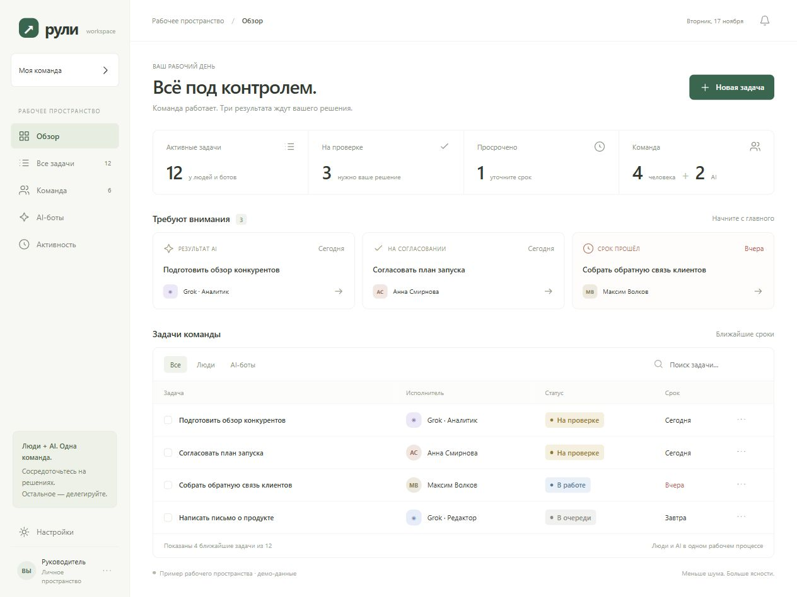
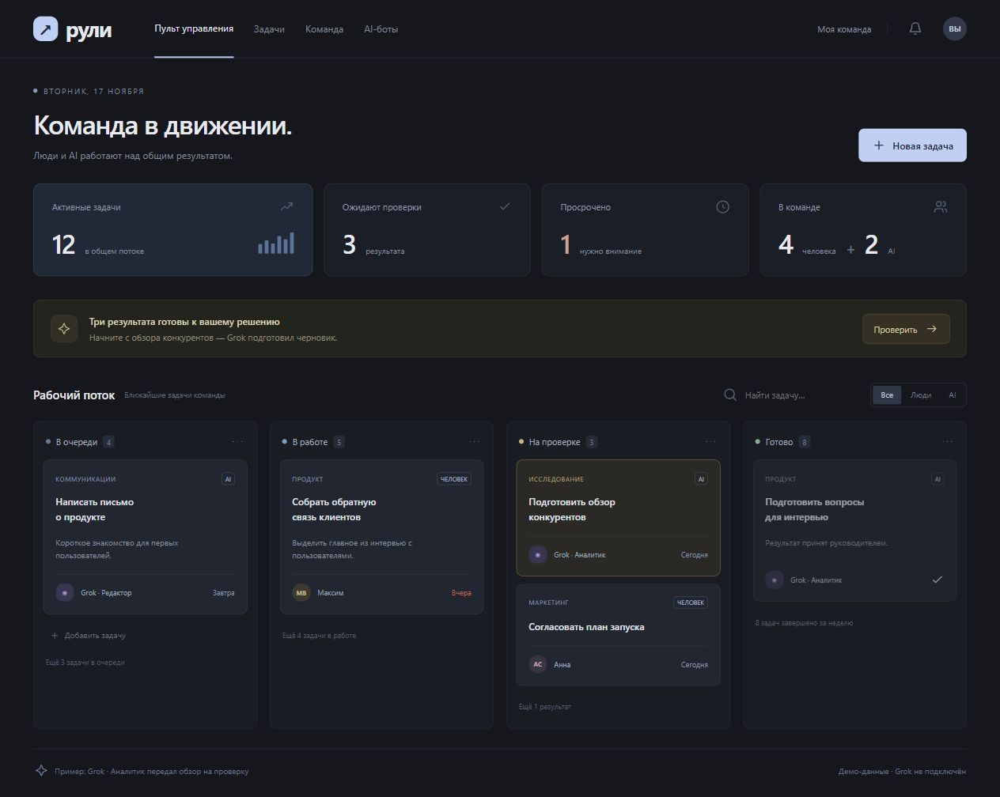
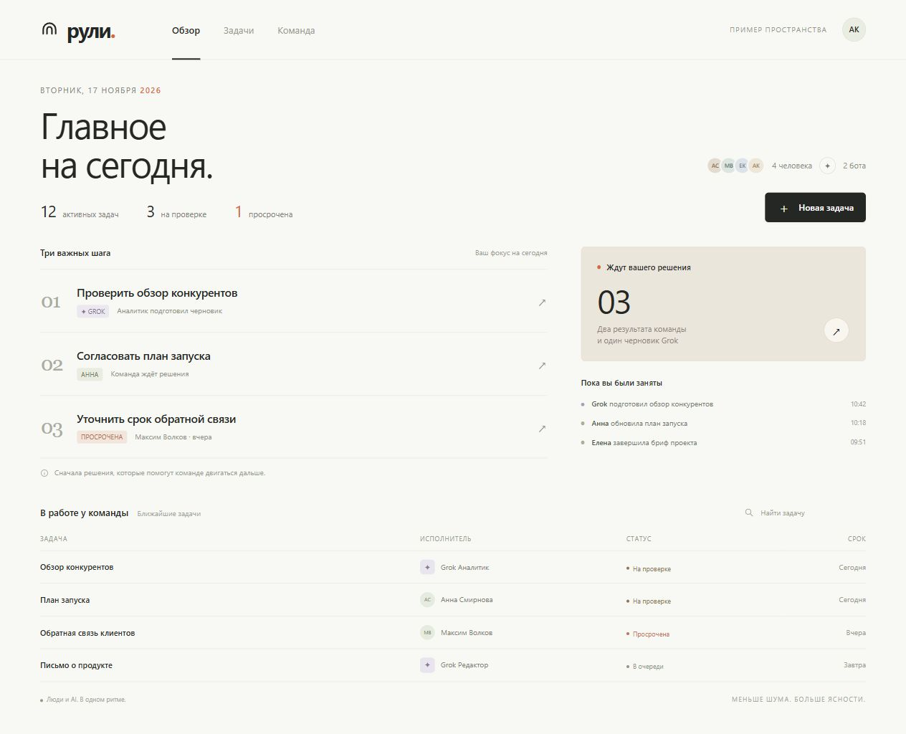
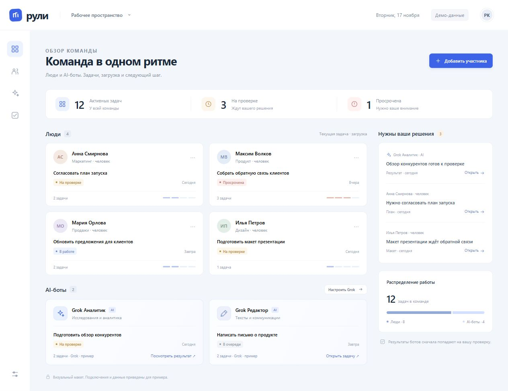

Нажмите на вариант, чтобы открыть макет.Люди и Grok-боты в одном пространстве.
Общий список задач · спокойный зелёный акцент

Канбан по этапам · графит и мягкий синий

Три приоритета · минимум элементов

Обзор по исполнителям · люди и AI отдельно
